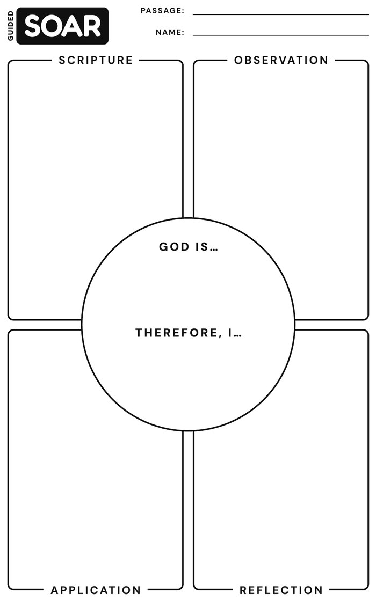
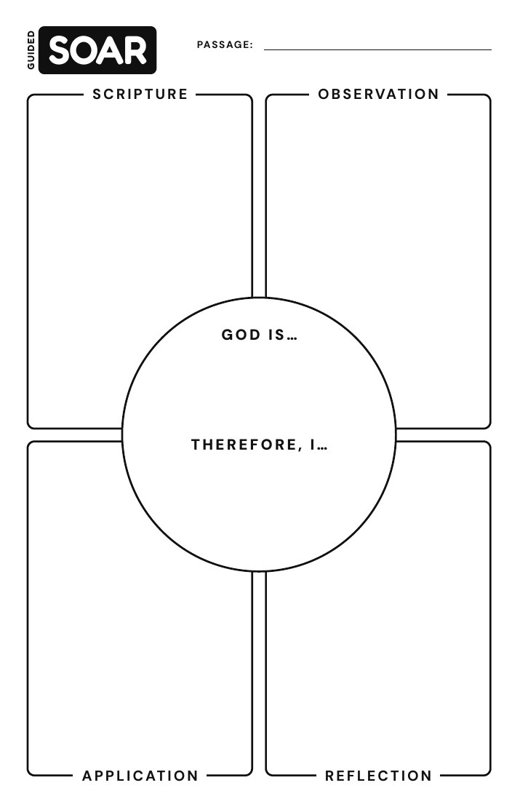
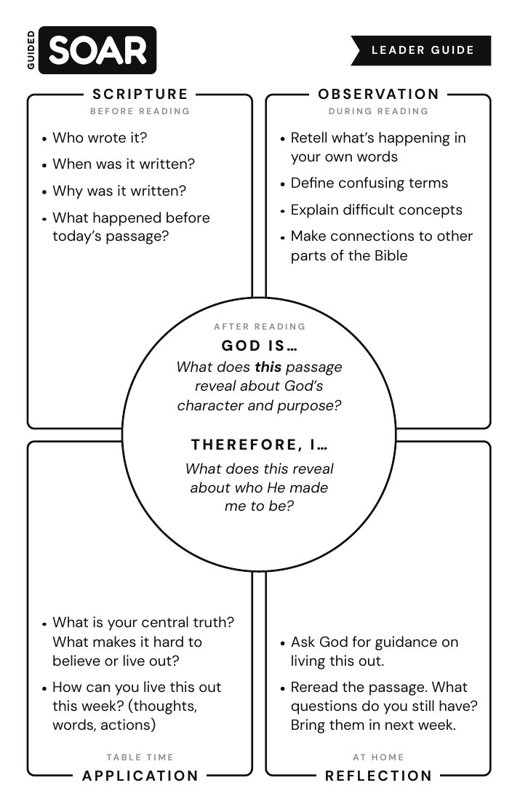
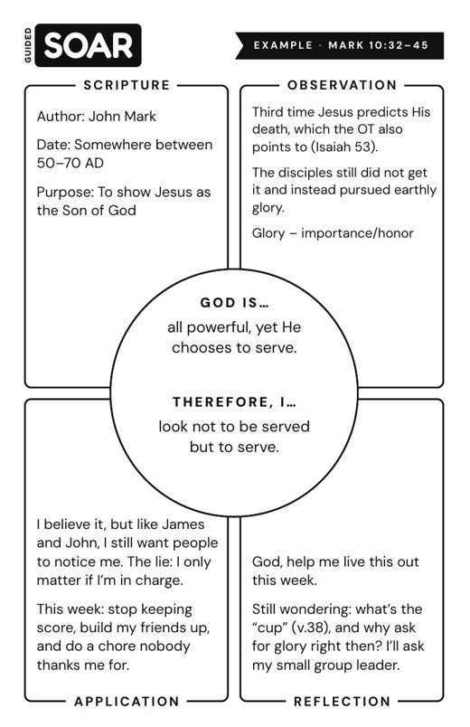
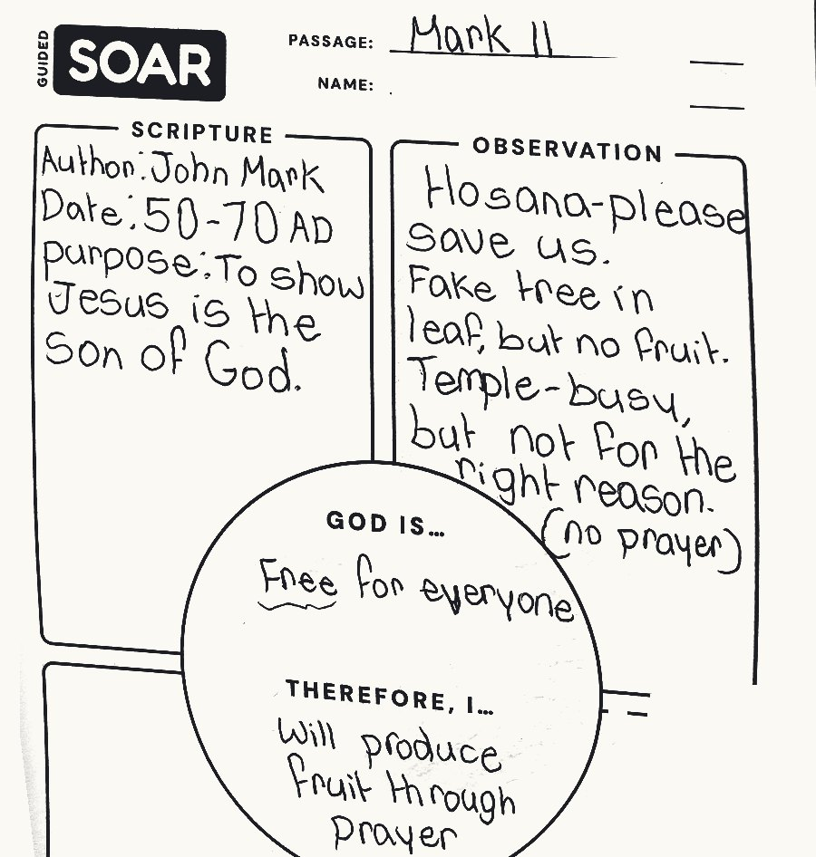
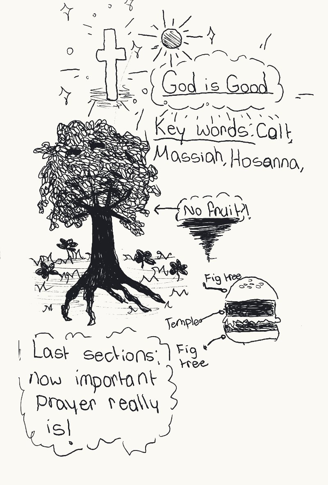
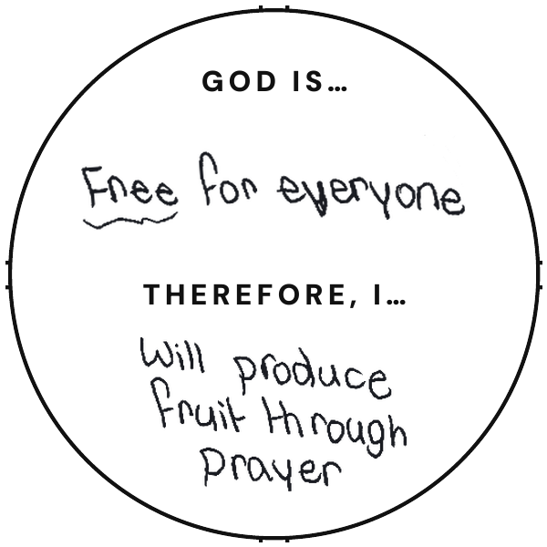

Case study · Guided SOAR
Biblical Literacy
The challenge
After reading a passage, most students said the same thing: “I should read my Bible more,” no matter what the passage said.
The outcome
Students now name what a passage reveals about God, and a response that fits it.
The journey
Discover
Audience: middle school students and their volunteer small-group leaders. Alongside other leaders, I asked questions adapted from Julie Dirksen and watched what students actually did.
- Do you know who wrote this passage, when and why?
- Can you walk me through how you figured out what it means?
- Why does this passage matter for your week?
- What gets in the way of reading during the week?
What I saw
Almost every application said the same thing: “Read my Bible more.” Students were skipping straight to a safe answer because they hadn’t found what the passage meant.
Define
Four gaps stood out
Mapped with Julie Dirksen’s learning gaps. Hover or tap a gap to see what it means.
The goalStudents read a passage, name what it reveals about God, and give a response that fits it.
Develop
A paper card keeps table time screen-free, with a corner for every gap.

A training ground for leaders
Leaders prep alone during the week, so a five-minute phone guide lets them practice the passage first.
- DiscoverFind the book on a map of all 66, then see its author, date and big picture.
- Word WorkHighlight hard words like “parables” and “squall” while reading, then see what each one means.
- LearnPick a verse and finish “God is…” in their own words.
- LiveLeave with the questions they’ll ask at the table.
Where AI helped, where I decided
I sketched every card and screen by hand, then used Claude Code to build and refine them quickly.
The gaps to target, the questions to ask, which words to define, what each format should be, and what to cut.
Deliver



All of it is bound into one pocket journal students keep.
The outcome
Before“I should read my Bible more.”
Central truths that fit the passage.
With context, word work and table time, students find what a passage reveals about God and name a response that fits it, like this one from Mark 11.



Other success markers
- More students bringing their own Bibles Habit
- More students talking at their tables Motivation